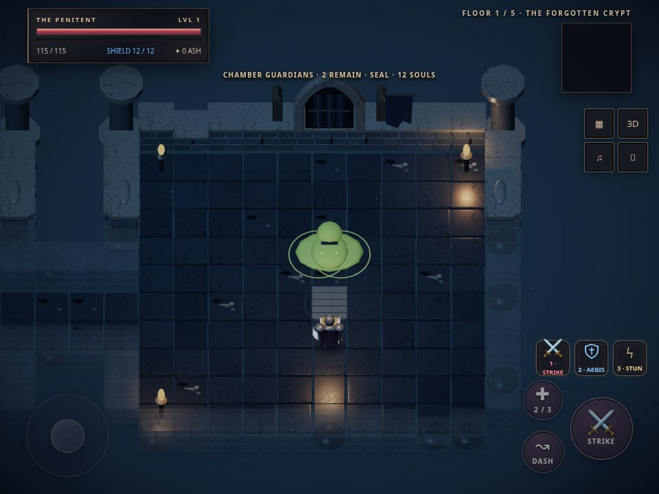
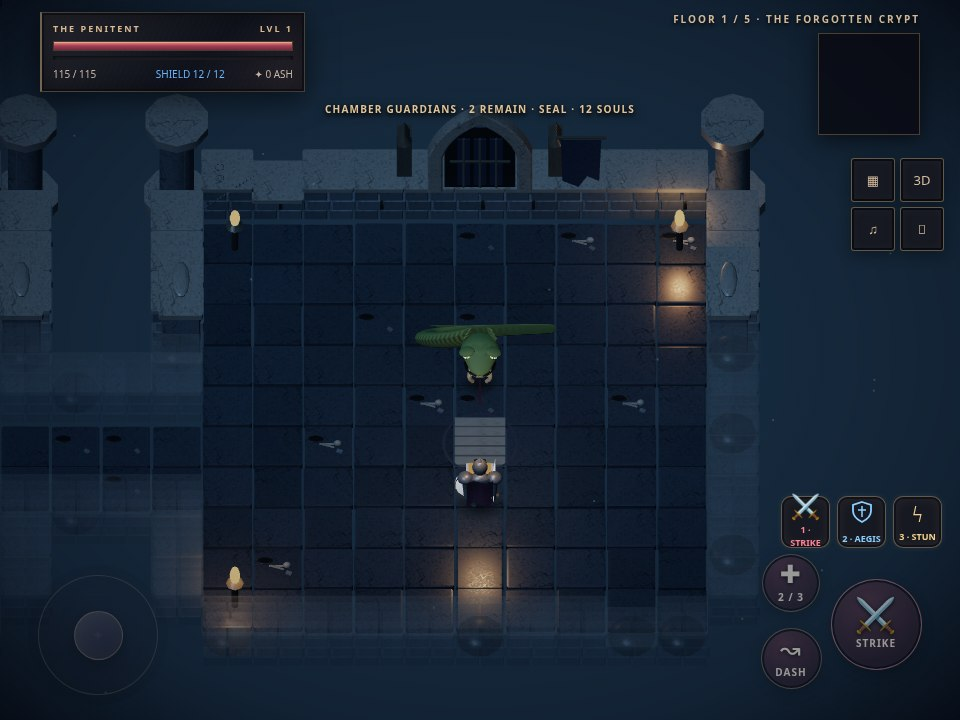
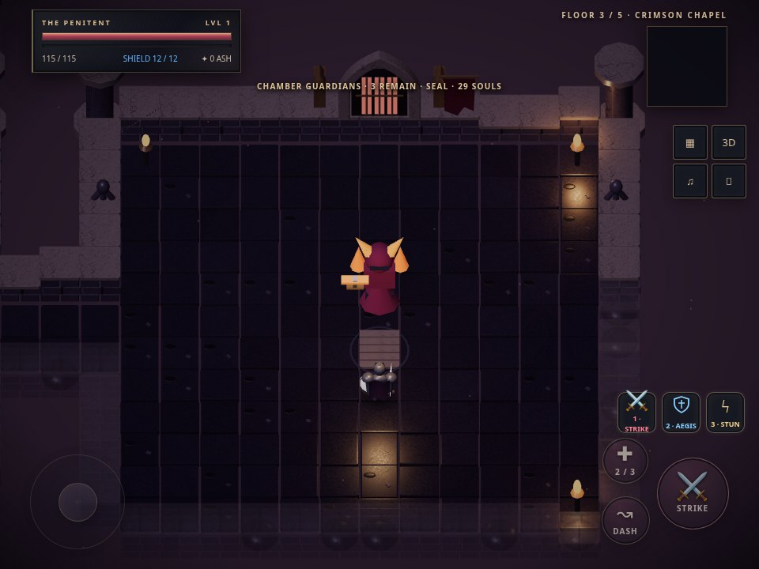
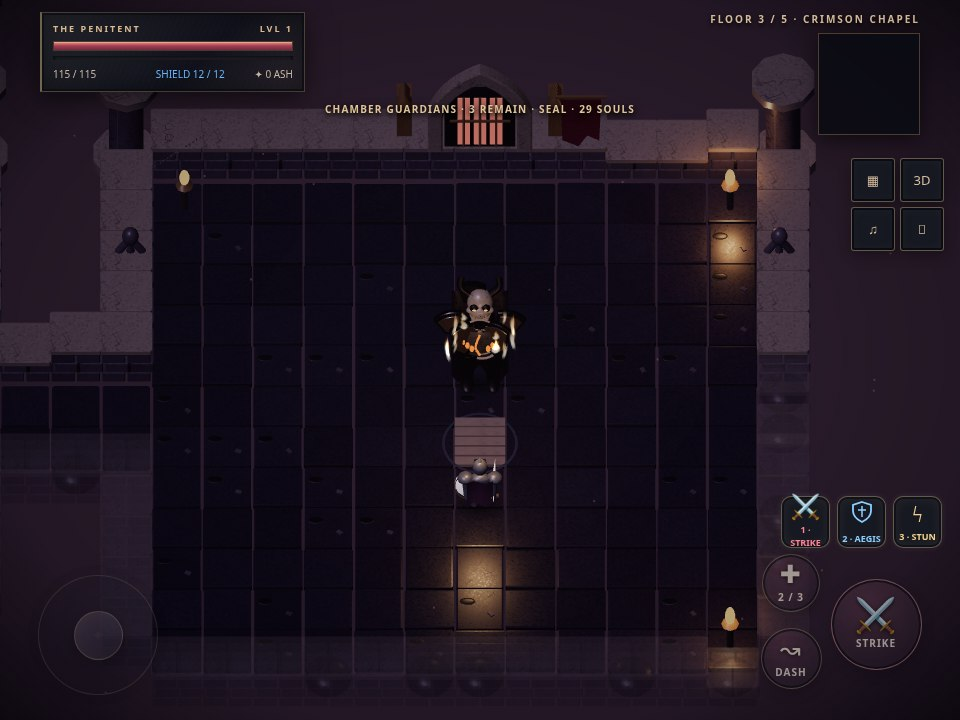
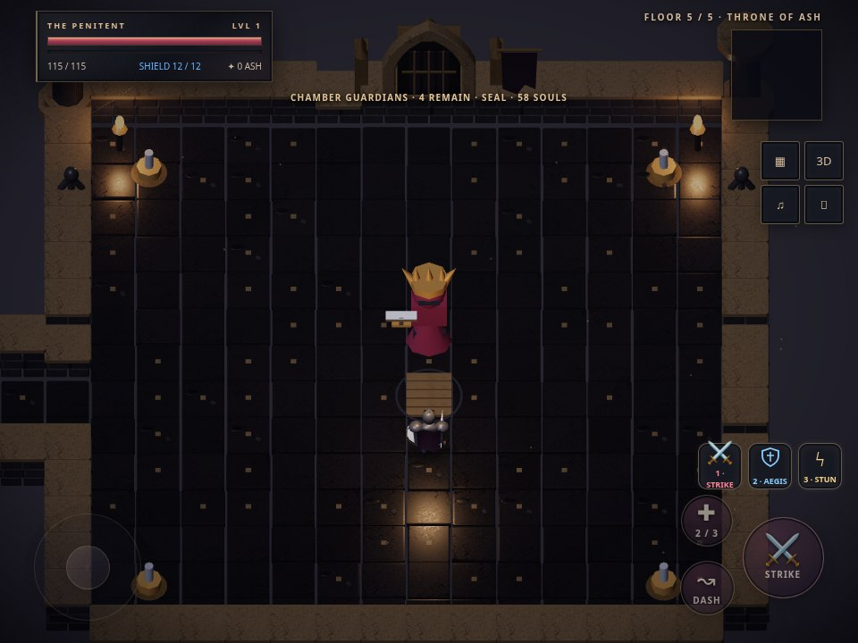
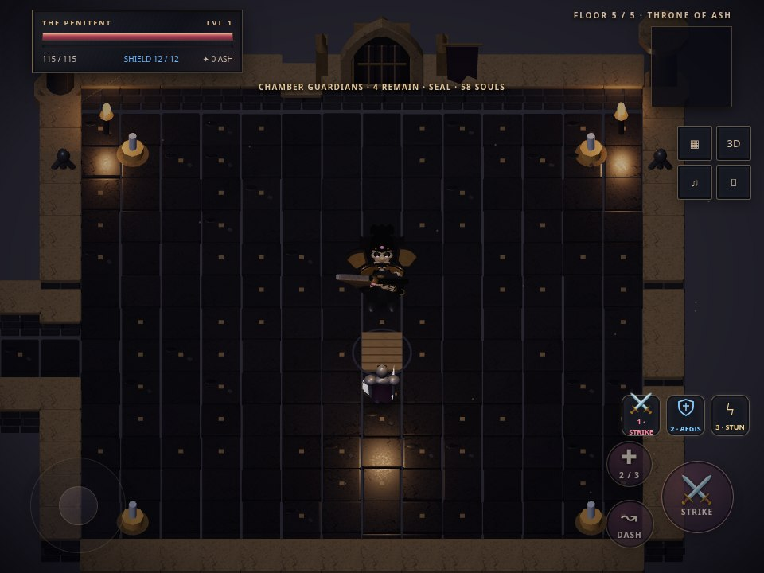
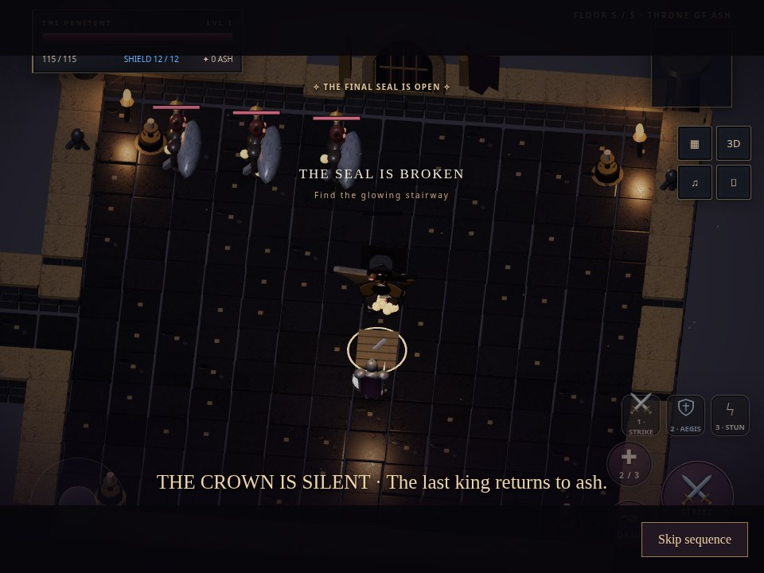
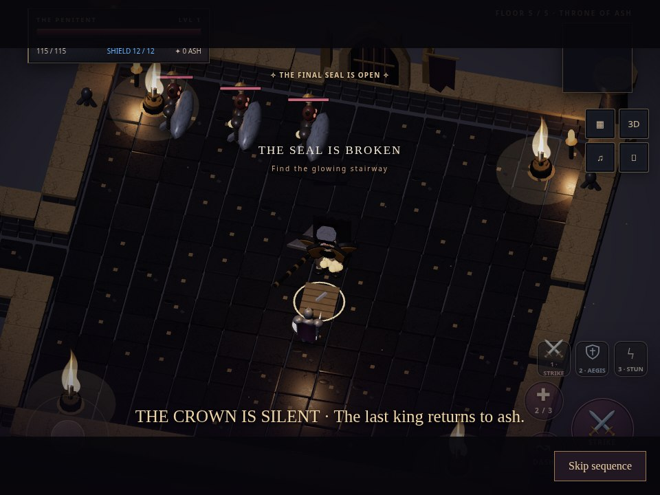
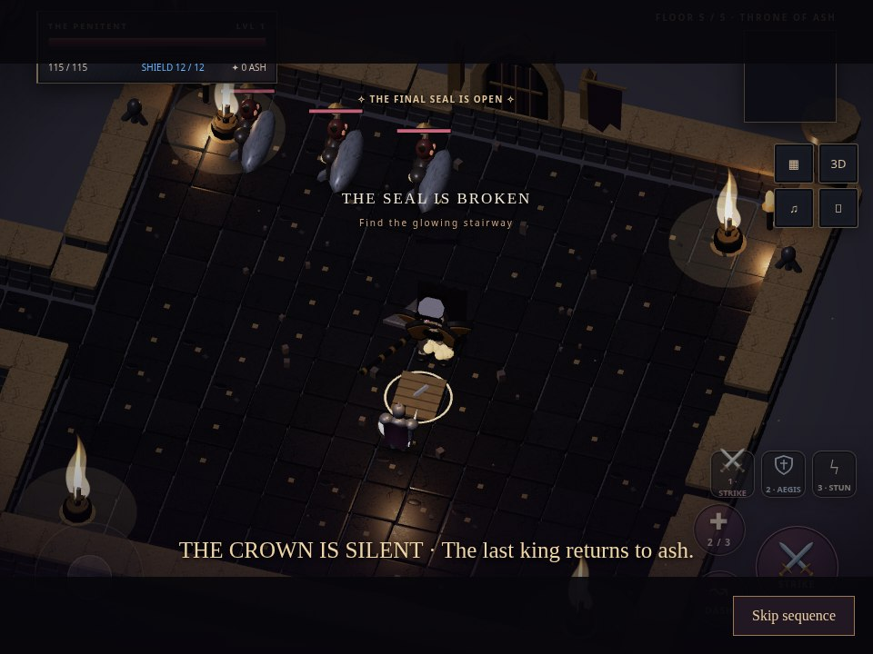

← Play the development buildVESPER · Boss presentation review
Actual seeded gameplay-camera captures, before and after the boss art extension. The procedural models, articulated animation and effects are rendered in the playable game. These are not sculpted/skinned commercial assets; professional art requirements remain in the project documentation.
The Snakeling · Floor 1

Before
After · deforming spine, scales, green eyes and jawThe Flameghoul · Floor 3

Before
After · articulated charred armour and animated flame tonguesThe Undead King · Floor 5

Before
After · royal armour, blackened crown and separate axeThe King's fall
The existing four-second skippable sequence: kneel, release the axe, flare all four candles, then begin the cathedral collapse. Falling masonry is visual and does not damage the player or alter map collision.

0.6s · kneeling
1.6s · released axe and candle flare
2.8s · falling masonryMobile captures: Snakeling · Flameghoul · King · victory.
Measured before/after rendering metrics use Chromium software WebGL and equivalent idle scenes. Extra detail adds work. These numbers are not physical iPhone or Android FPS, and do not measure worst-case combat.